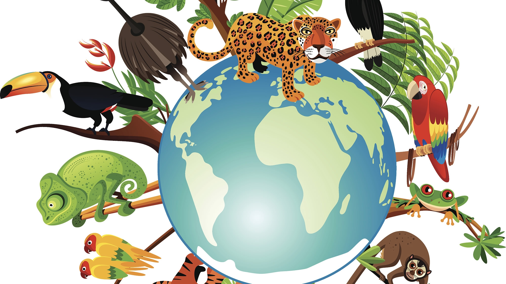

RECENT PROJECT

TU Berlin
How climate change is affecting in world's economy

TU Berlin
How climate change is affecting on biodiversity
I have completed my masters in Environmental Planning from Technical University of Berlin (TUB), Germany. Prior to join at TUB, I did my bachelor in Urban and Regional Planning from Jahangirnagar University, Dhaka, Bangladesh. I have a professional work experience in Urban development, Environmental issues and Geo- technology related fields for more than three years.
DOWNLOAD RESUME
How climate change is affecting in world's economy
How climate change is affecting on biodiversity